保留测试集
57 / 66 张判定正确
正确率 86.4%，百分之九十五区间约 76.1%—92.7%。
- 缺陷召回率
- 100.0%
- 异常判定精确率
- 71.0%
- 综合判定分数
- 0.830
- 异常分数排序指标
- 0.968
已经实际训练金属件缺陷模型，保留逐轮日志、独立测试结果与误判。图片上传和摄像头帧可在本机重新识别，机械臂接入仍需现场设备。
训练、预测和误判，
都有真实记录。
选一张图片，自动看完读取、识别、处置和结果；也可以一次看三件。
无需上传文件。选择左侧的产品图片，系统会自动带你看完一次质检。
先识别，再安排动作。图像类别标签不会参与模型计算。
这里按步骤展示已保存的真实模型输出，不把播放等待时间当作推理耗时。在本机登录后重新识别 ↗ 六张预设用于讲解，完整测试统计仍以全部六十六张图片为准。
这次对公开工业图片实际执行了梯度训练，再用保留的测试图片逐张运行模型。图中的热区是模型计算结果，绿色区域是人工标注，二者分别展示。机械臂仍未接入现场设备。
正确率 86.4%，百分之九十五区间约 76.1%—92.7%。
正确与错误的全部 66 条记录均可下载，阈值只用 39 张验证图片确定，测试图片未参与参数更新或阈值选择。
预热五次后，对 66 张图片逐张测量。本机处理器、两个线程，单张输入 192 × 192。计入缩放、模型和阈值处理，不含相机、网络、控制器或机械臂，也不含页面热图编码。
区域定位按像素标注单独测评，与整张图片的异常判定分别计算。
本机识别入口需要登录，上传图片或手动启用摄像头后会重新运行已训练模型。公网案例页展示实际计算后保存的结果，不调用付费云模型。测试来自单一公开产品类别，缺少独立工厂批次信息，不能代替用户产线验收。
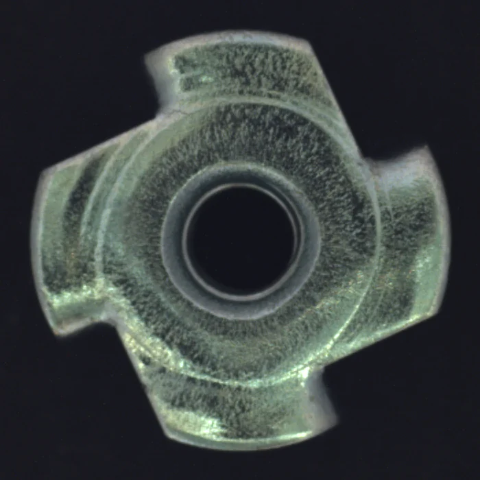
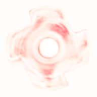
模型判定：异常 · 异常分数 0.6215
这张图的处理耗时：43.9 毫秒
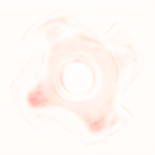
模型判定：异常 · 异常分数 0.5061
这张图的处理耗时：45.0 毫秒
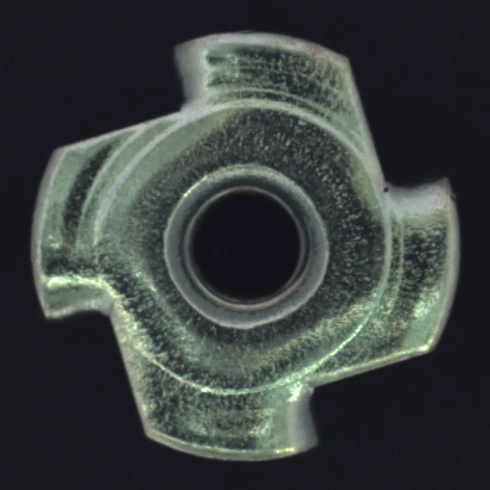
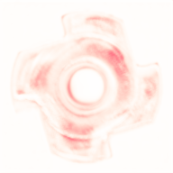
模型判定：异常 · 异常分数 0.7081
这张图的处理耗时：48.9 毫秒
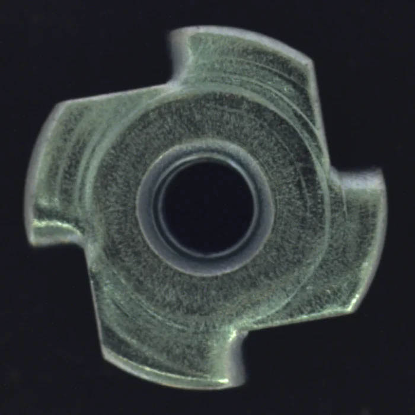
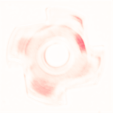
模型判定：异常 · 异常分数 0.5262
这张图的处理耗时：52.5 毫秒
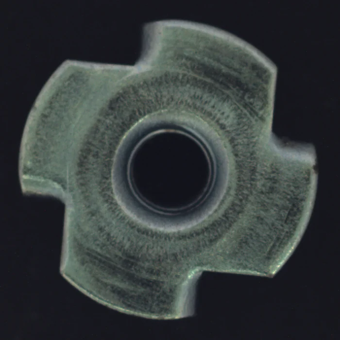
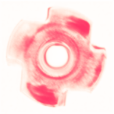
模型判定：异常 · 异常分数 0.9343
这张图的处理耗时：52.9 毫秒
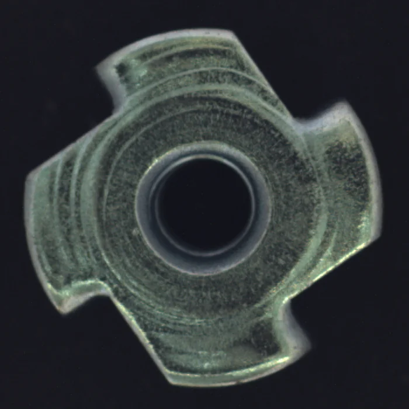
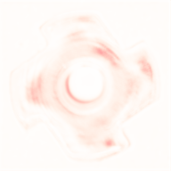
模型判定：异常 · 异常分数 0.5854
这张图的处理耗时：51.1 毫秒
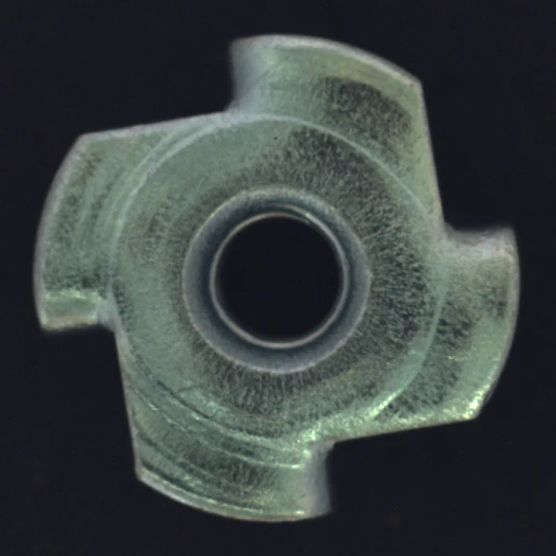
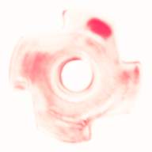
模型判定：异常 · 异常分数 0.7679
这张图的处理耗时：51.8 毫秒
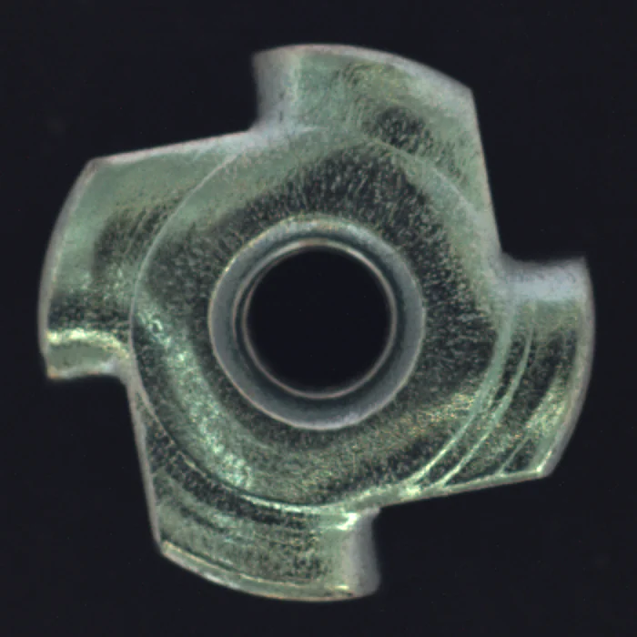
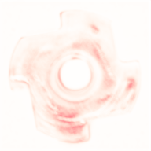
模型判定：异常 · 异常分数 0.5918
这张图的处理耗时：50.1 毫秒
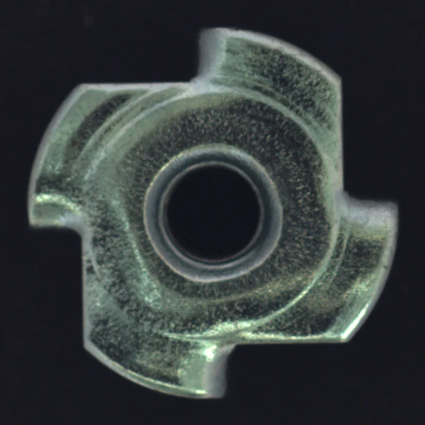
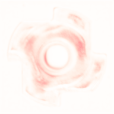
模型判定：异常 · 异常分数 0.4900
这张图的处理耗时：50.6 毫秒
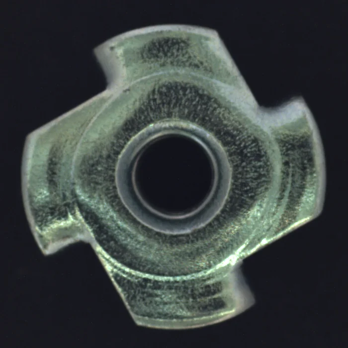
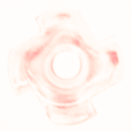
模型判定：正常 · 异常分数 0.4531
这张图的处理耗时：48.8 毫秒
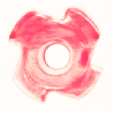
模型判定：异常 · 异常分数 0.9451
这张图的处理耗时：48.4 毫秒
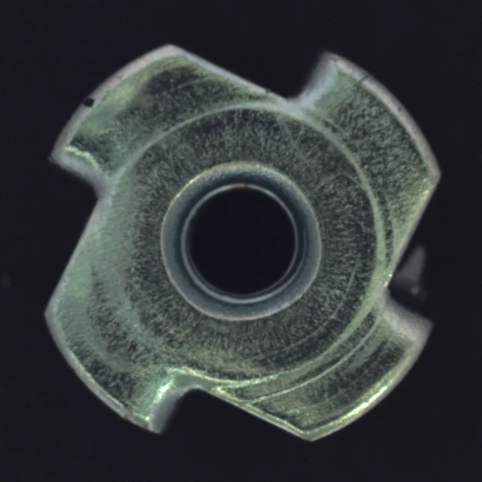
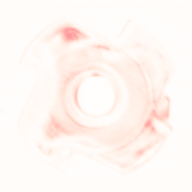
模型判定：异常 · 异常分数 0.5382
这张图的处理耗时：49.8 毫秒
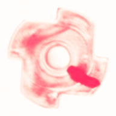
模型判定：异常 · 异常分数 0.9620
这张图的处理耗时：44.2 毫秒
模型判定：异常 · 异常分数 0.9611
这张图的处理耗时：46.6 毫秒
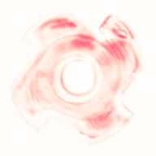
模型判定：异常 · 异常分数 0.8276
这张图的处理耗时：47.4 毫秒
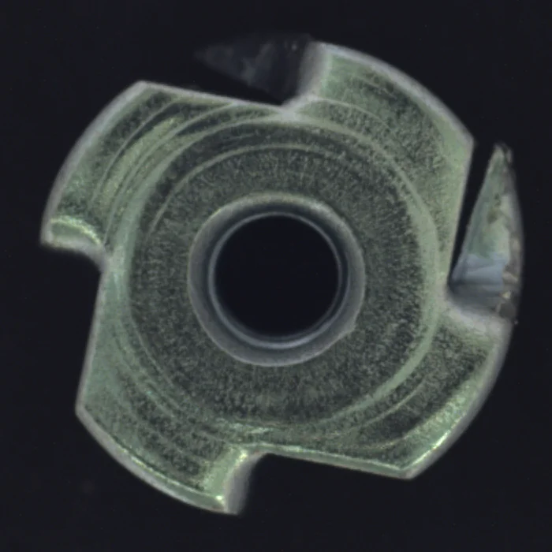
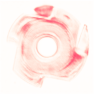
模型判定：异常 · 异常分数 0.8589
这张图的处理耗时：44.9 毫秒
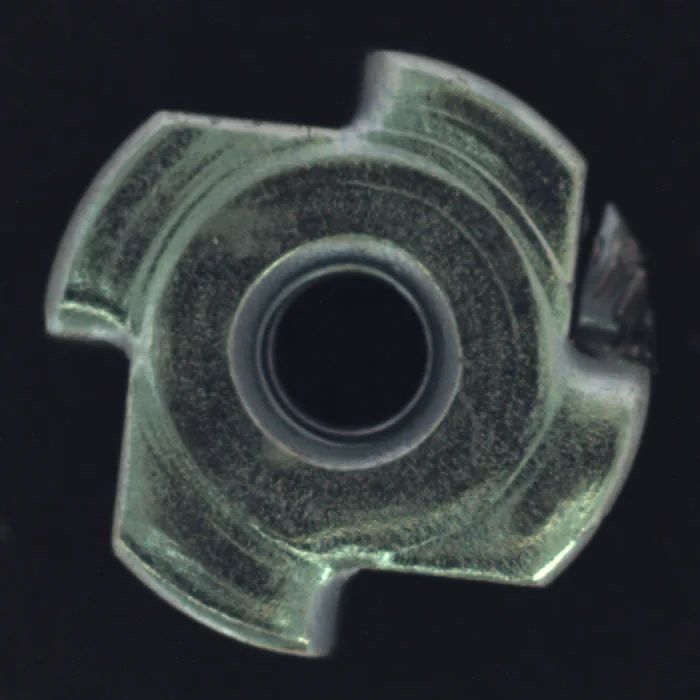
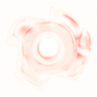
模型判定：异常 · 异常分数 0.6565
这张图的处理耗时：44.0 毫秒
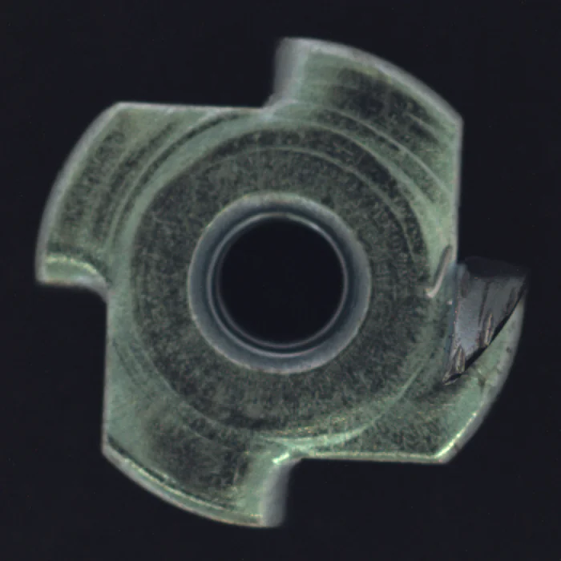
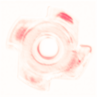
模型判定：异常 · 异常分数 0.8035
这张图的处理耗时：44.3 毫秒
| 测试编号 | 真实类别 | 模型判定 | 异常分数 | 结果 |
|---|---|---|---|---|
| 1 | 外形变形 | 异常 | 0.5382 | 正确 |
| 2 | 外形变形 | 异常 | 0.8276 | 正确 |
| 3 | 外形变形 | 异常 | 0.8589 | 正确 |
| 4 | 外形变形 | 异常 | 0.6565 | 正确 |
| 5 | 外形变形 | 异常 | 0.8035 | 正确 |
| 6 | 表面异色 | 异常 | 0.9620 | 正确 |
| 7 | 表面异色 | 异常 | 0.7639 | 正确 |
| 8 | 表面异色 | 异常 | 0.6500 | 正确 |
| 9 | 表面异色 | 异常 | 0.8039 | 正确 |
| 10 | 表面异色 | 异常 | 0.7454 | 正确 |
| 11 | 零件翻面 | 异常 | 0.9611 | 正确 |
| 12 | 零件翻面 | 异常 | 0.9593 | 正确 |
| 13 | 零件翻面 | 异常 | 0.9691 | 正确 |
| 14 | 零件翻面 | 异常 | 0.9653 | 正确 |
| 15 | 零件翻面 | 异常 | 0.9636 | 正确 |
| 16 | 零件翻面 | 异常 | 0.9608 | 正确 |
| 17 | 正常表面 | 正常 | 0.4531 | 正确 |
| 18 | 正常表面 | 异常 | 0.6215 | 误判 |
| 19 | 正常表面 | 正常 | 0.3260 | 正确 |
| 20 | 正常表面 | 异常 | 0.5061 | 误判 |
| 21 | 正常表面 | 正常 | 0.4435 | 正确 |
| 22 | 正常表面 | 异常 | 0.7081 | 误判 |
| 23 | 正常表面 | 正常 | 0.3942 | 正确 |
| 24 | 正常表面 | 正常 | 0.2923 | 正确 |
| 25 | 正常表面 | 异常 | 0.5262 | 误判 |
| 26 | 正常表面 | 正常 | 0.3913 | 正确 |
| 27 | 正常表面 | 正常 | 0.3428 | 正确 |
| 28 | 正常表面 | 异常 | 0.9343 | 误判 |
| 29 | 正常表面 | 异常 | 0.5854 | 误判 |
| 30 | 正常表面 | 异常 | 0.7679 | 误判 |
| 31 | 正常表面 | 正常 | 0.4446 | 正确 |
| 32 | 正常表面 | 正常 | 0.2935 | 正确 |
| 33 | 正常表面 | 正常 | 0.3938 | 正确 |
| 34 | 正常表面 | 异常 | 0.5918 | 误判 |
| 35 | 正常表面 | 异常 | 0.4900 | 误判 |
| 36 | 正常表面 | 正常 | 0.3633 | 正确 |
| 37 | 正常表面 | 正常 | 0.3937 | 正确 |
| 38 | 正常表面 | 正常 | 0.2770 | 正确 |
| 39 | 表面划伤 | 异常 | 0.9451 | 正确 |
| 40 | 表面划伤 | 异常 | 0.9388 | 正确 |
| 41 | 表面划伤 | 异常 | 0.5754 | 正确 |
| 42 | 表面划伤 | 异常 | 0.7002 | 正确 |
| 43 | 表面划伤 | 异常 | 0.8814 | 正确 |
| 44 | 表面划伤 | 异常 | 0.9095 | 正确 |
| 45 | 正常表面 | 正常 | 0.3557 | 正确 |
| 46 | 正常表面 | 正常 | 0.2303 | 正确 |
| 47 | 正常表面 | 正常 | 0.2674 | 正确 |
| 48 | 正常表面 | 正常 | 0.4311 | 正确 |
| 49 | 正常表面 | 正常 | 0.2931 | 正确 |
| 50 | 正常表面 | 正常 | 0.3382 | 正确 |
| 51 | 正常表面 | 正常 | 0.3374 | 正确 |
| 52 | 正常表面 | 正常 | 0.2846 | 正确 |
| 53 | 正常表面 | 正常 | 0.4718 | 正确 |
| 54 | 正常表面 | 正常 | 0.3697 | 正确 |
| 55 | 正常表面 | 正常 | 0.2728 | 正确 |
| 56 | 正常表面 | 正常 | 0.2739 | 正确 |
| 57 | 正常表面 | 正常 | 0.3276 | 正确 |
| 58 | 正常表面 | 正常 | 0.3575 | 正确 |
| 59 | 正常表面 | 正常 | 0.2865 | 正确 |
| 60 | 正常表面 | 正常 | 0.2801 | 正确 |
| 61 | 正常表面 | 正常 | 0.2513 | 正确 |
| 62 | 正常表面 | 正常 | 0.2429 | 正确 |
| 63 | 正常表面 | 正常 | 0.3217 | 正确 |
| 64 | 正常表面 | 正常 | 0.3794 | 正确 |
| 65 | 正常表面 | 正常 | 0.3216 | 正确 |
| 66 | 正常表面 | 正常 | 0.3180 | 正确 |
这是一份自定义监督划分下的真实实验，不是原数据集官方无监督基准；测试集的图像哈希与训练、验证集无重叠。影像间可能仍有同一产品与成像条件的关联，未宣称跨批次泛化效果。测评使用原始图片，网页图片经过压缩，重新上传压缩图得到的分数可能略有变化。
下方使用此次模型对保留测试图片的真实预测记录进行控制流程回放。机械臂和输送带仍是软件动画，尚未连接设备；上传新图片的实时计算请进入本机识别工作台。
点击样本只改变下一件待进入产品。遇到结果超时或回执丢失，推演暂停并要求复核；不会自动记作良品或剔除成功。切换到后台也会暂停。
这些图片来自未参与训练的保留测试集。流程动作按模型实际分数与阈值生成：判为异常的进入剔除路径，接近阈值的转入复核。图片的人工类别只用于结果对照，不参与模型计算。
点击图片可安排下一件测试记录。上方真实模型区域保留人工标注与预测结果的分别对照。
光电传感器检测到来料，触发固定相机和光源；锁存采图时的编码器计数，为工件生成唯一编号。根据材料反光、尺寸和节拍选择成像条件。
对有效检测区域进行定位与预处理，模型输出异常分数和区域。由经过验证的阈值及缺陷规则生成“放行、剔除、复核”三种业务结果。
将编号、判定、相机位置和编码器位置发送给控制器。按工件到取件位的剩余距离排程，检查结果是否及时、机械臂是否空闲，避免抓错相邻工件。
机械臂跟踪输送位置并取件，按处置进入次品箱或复核箱。检查夹持与执行回执，确认编号匹配后才计数；超时和未知状态进入异常处理。
异常区域解释“为什么拦下”，零件姿态决定“从哪里拿起”。抓取点按整个零件、夹具和可接触区域确定；通过相机标定、手眼关系和输送跟踪转到机器人坐标，不能直接把缺陷像素中心当成机械臂坐标。
实际接入优先使用编码器位移关联工件，不单靠识别后固定延时。到位前确认工件编号、目标位置和命令有效期；重复命令去重，旧结果过期后不补发剔除动作。
工程参考：相机触发与编码器同步、机械臂输送跟踪配置。具体设备与连接方式须在现场确认。
推理预算初值来自本次实测模型耗时的百分之九十五分位向上取整，仍可调整。修改参数会复位当前推演，可先导出记录。采集与预处理预算为 19 毫秒，其中软件预处理参考本次实测，相机另预留五毫秒待验证；后处理与通信合计预算为 8 毫秒，其中传输预留七毫秒待验证。动作提前量三百毫秒，保护余量一百毫秒，机械臂完整周期九百毫秒；均为本案例的设计输入。
采集与预处理 + 推理 + 通信
按当前输入，时间与连续次品节拍预算均有余量。
毫秒级判定不意味着机械臂在同样时间内完成抓放。实际需要测量全链路的高分位延迟与最坏情况，并验证连续次品、速度波动和设备忙碌时的调度。
本次从头训练了一个轻量编码器—解码器网络，包含异常分割和图像二分类两个输出分支，共 278,514 个参数。训练使用 230 张图片，39 张用于检查模型与校准阈值；保留 66 张，完成模型选择后才执行最终测试。
图像按固定种子划分，逐张保留来源与哈希。训练包含旋转、水平翻转和小范围亮度变化；只在训练集采样增强，验证与测试保留固定输入。
模型同时比较像素区域与人工标注、整张图像与异常标签，通过反向传播更新权重。按验证损失保存权重，再在验证集选择异常分数输出与阈值，最后封存配置执行测试。
本次异常分数采用二分类分数与热图中最高百分之一像素均值的平均值。三个预先约定的输出方案只在验证集比较。当前图像判定阈值为 0.4884，像素阈值为 0.70。这些值服务于本次数据划分，不是所有产品通用的合格标准。
曲线直接读取每轮实际日志，虚线为按验证集选中的权重。数值保留真实波动，损失下降不等于所有新产品都能识别。
| 轮次 | 训练损失 | 验证损失 | 耗时 / 秒 |
|---|---|---|---|
| 1 | 2.28493 | 2.20288 | 19.7 |
| 2 | 2.19449 | 2.21259 | 18.7 |
| 3 | 2.20323 | 2.15733 | 17.7 |
| 4 | 2.16736 | 2.15469 | 158.4 |
| 5 | 2.17331 | 2.14680 | 47.4 |
| 6 | 2.17306 | 2.13844 | 34.7 |
| 7 | 2.15296 | 2.14405 | 34.2 |
| 8 | 2.14770 | 2.12418 | 24.4 |
| 9 | 2.13048 | 2.10419 | 24.9 |
| 10 | 2.10623 | 2.11061 | 27.1 |
| 11 | 2.16327 | 2.11300 | 29.1 |
| 12 | 2.11222 | 2.09720 | 29.5 |
| 13 | 2.10603 | 2.10098 | 38.2 |
| 14 | 2.08288 | 2.08900 | 29.6 |
| 15 | 2.07771 | 2.08544 | 36.6 |
| 16 | 2.06779 | 2.06272 | 35.3 |
| 17 | 2.06778 | 2.06379 | 31.0 |
| 18 | 2.03467 | 2.03074 | 27.4 |
| 19 | 1.94562 | 1.90101 | 39.0 |
| 20 | 1.88678 | 1.82900 | 26.3 |
| 21 | 1.91385 | 1.80469 | 45.4 |
| 22 | 1.77320 | 1.74811 | 78.9 |
| 23 | 1.71397 | 1.69439 | 47.9 |
| 24 | 1.72621 | 1.64264 | 37.8 |
| 25 | 1.72508 | 1.64886 | 36.6 |
| 26 | 1.62747 | 1.62996 | 48.6 |
| 27 | 1.66271 | 1.48959 | 46.0 |
| 28 | 1.55641 | 1.42849 | 36.3 |
| 29 | 1.54708 | 1.47201 | 33.7 |
| 30 | 1.46513 | 1.65307 | 26.7 |
| 31 | 1.52415 | 1.40044 | 31.2 |
| 32 | 1.38530 | 1.51529 | 35.5 |
| 33 | 1.39019 | 1.37716 | 27.9 |
| 34 | 1.32265 | 1.37033 | 28.0 |
| 35 | 1.38823 | 1.37144 | 29.1 |
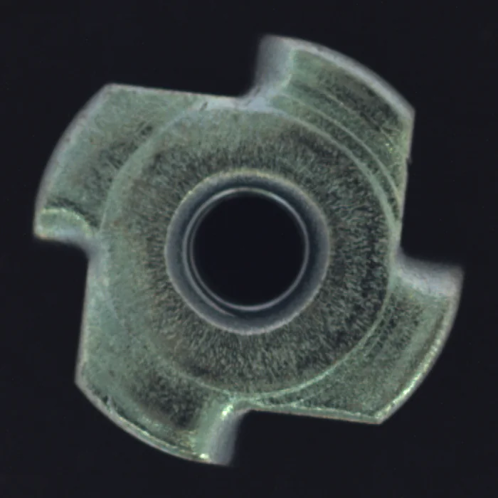
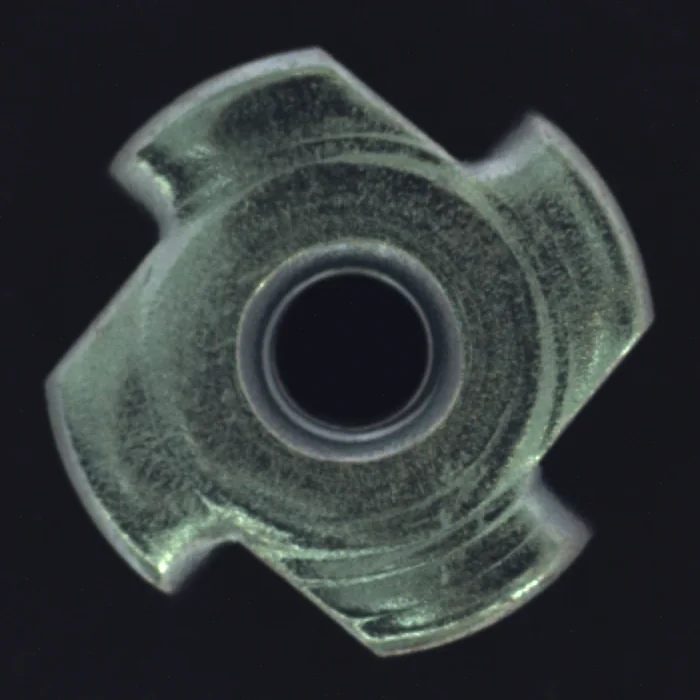
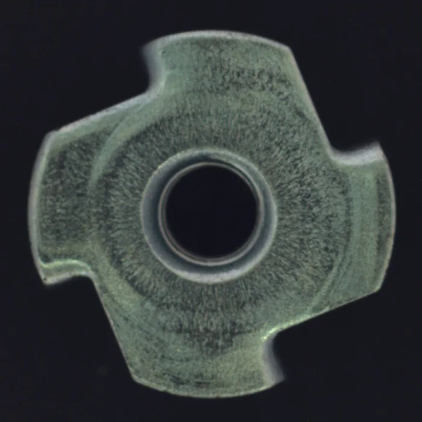
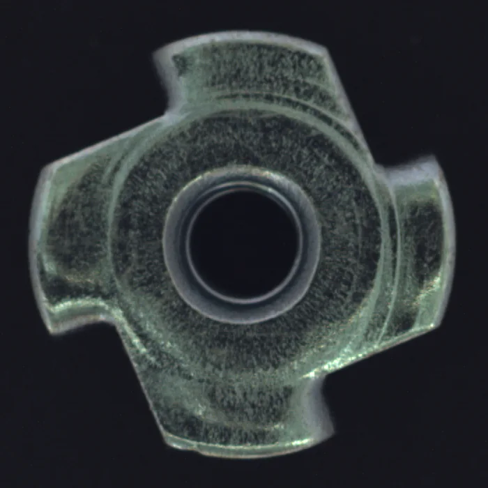
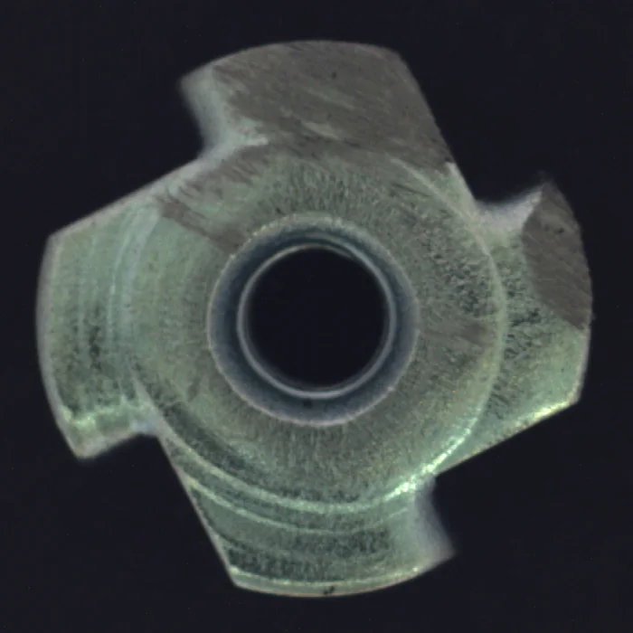
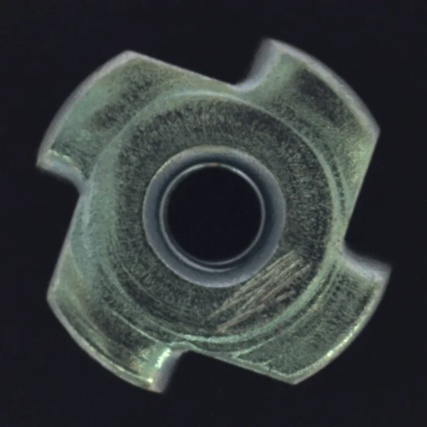
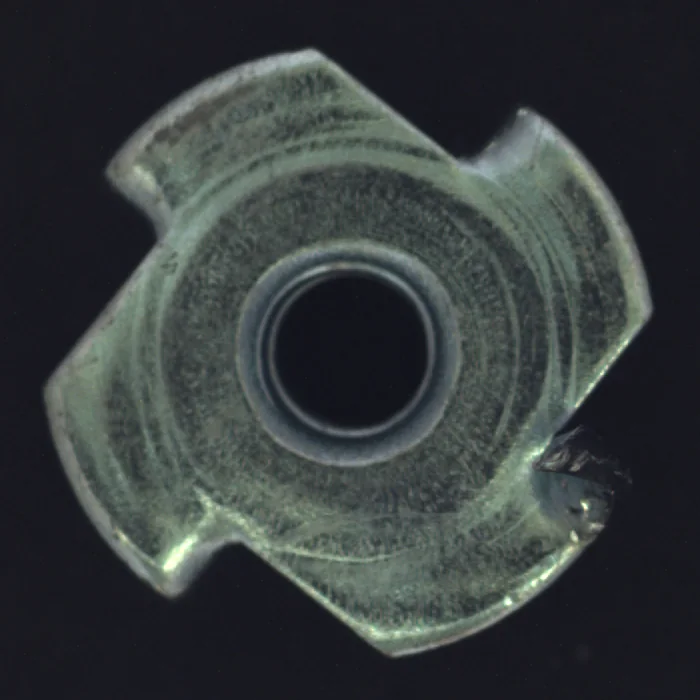
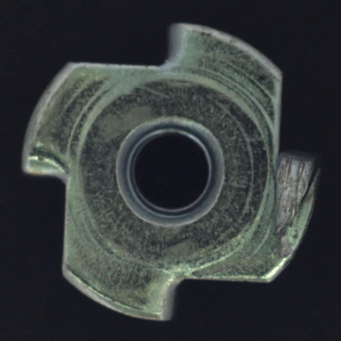
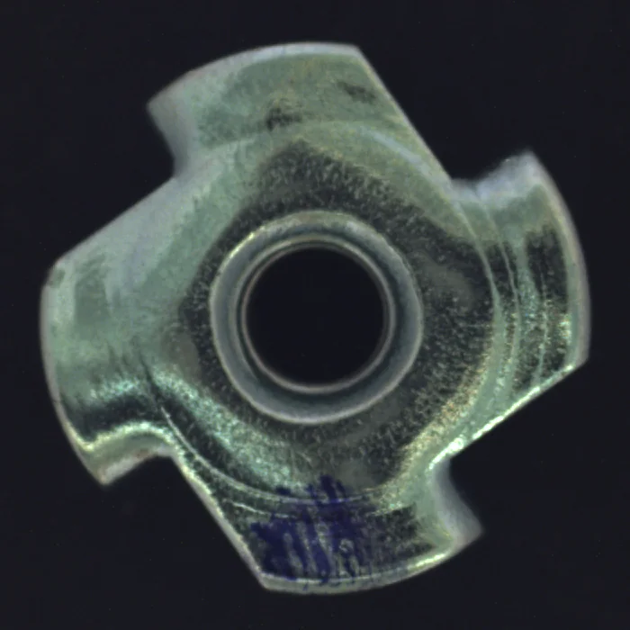
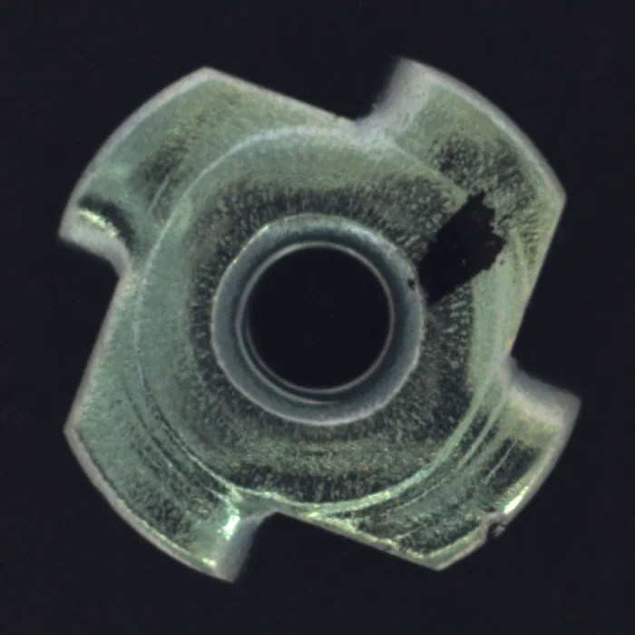
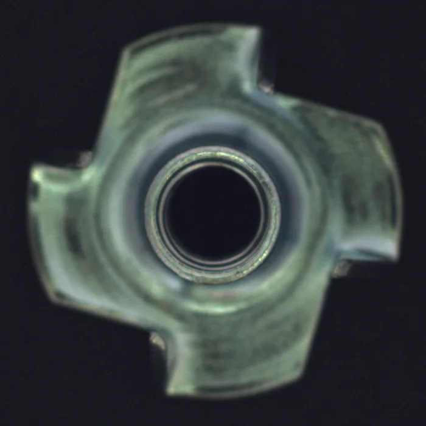
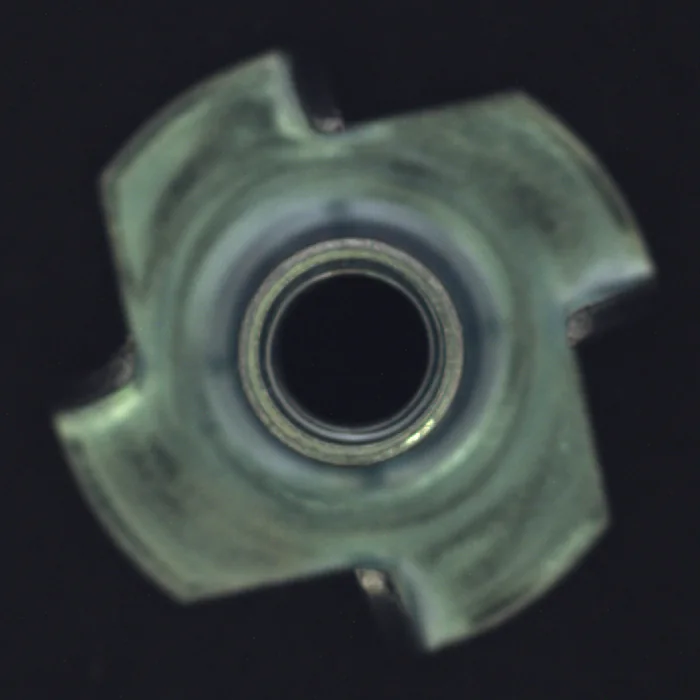
df036680a999fb458a98a634c94321615b55a038413b6f3d04136889dc21eb85权重保存在 T7 的本机模型服务中，登录后才能调用。公开网站提供实际日志、测评记录与训练源码；未把模型文件或产品账号放进公开仓库。
下载训练与测评源码网络结构参考 编码器—解码器分割研究，本次使用自写的轻量双分支实现；没有照搬论文中的性能数字。
产品材质、尺寸、检测面、最小可接受缺陷、放行与复核标准，以及线速度、产品间距和连续次品情况。当前实验针对公开数据中的单一金属件；用户现场产品与工艺条件仍需另行采集。
工业相机、镜头与光源完成成像验证；检查运动模糊和反光。建立触发编号、编码器计数、相机坐标与机器人抓取坐标之间的关系。
控制报文保留工件编号、决策编号、处置、采图位置、目标位置、有效期和模型版本。控制器校验编号并去重，机器人执行后返回结果，未确认则不计为剔除成功。
逐项检查丢帧、超时、重复指令、编码器异常、无可用抓取位、机械臂忙和夹持失败。急停、设备互锁与危险动作边界由符合现场要求的工业控制系统承担。
| 验收环节 | 需要保留的证据 | 当前状态 |
|---|---|---|
| 视觉识别 | 按批次留出的真实合格件、缺陷件与质检复核记录 | 公开数据训练与测评已完成；现场数据待接入 |
| 完整链路时延 | 触发、采图、判定、下发和执行的时间戳及高分位统计 | 待硬件测量 |
| 取件与剔除 | 连续次品、位置偏差、抓放记录与编号匹配的执行回执 | 待设备联调 |
| 软件推演 | 模型预测记录驱动的控制回放、预算计算、超时停线与记录导出 | 本页可操作 |
已经实际完成模型训练、保留测试集测评和单张图像处理耗时测量，本机登录工作台支持上传图片及手动授权后的摄像头帧识别。公网展示保存的真实预测与训练证据。工业相机触发、控制器通信、机械臂运动和现场安全验收仍待设备接入，没有宣称产线已经投产。
素材署名：MVTec Software GmbH，2019。工业异常数据由原数据集发布方提供，当前少量图片及像素标注用于非商业学习案例，图片做了等比缩放和压缩。许可为“署名—非商业性使用—相同方式共享 4.0”。
数据来源与使用限制 ↗查看素材许可 ↗